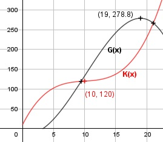

Aufgabe 72 Ein Betrieb hat fixe Kosten von 10 GE. Seine Kostenfunktion 3. Grades hat einen Wendepunkt bei (10;120) und dort eine Steigung von 1. Sein Erlös beträgt 25,3 GE/ME. Wie hoch ist sein maximaler Gewinn G? x = Mengeneinheiten ME G(x) = E(x) - K(x) E(x) = 25,3 * x GE K(x) = Kv(x) + Kf K(x) = ax3 + bx2 + cx + d K'(x) = 3ax2 + 2bx + c K''(x) = 6ax + 2b Bedingungen: K(0) = 10 --> d = 10 K(10) = 120 --> 120 = a * 103 + b * 102 + c *10 + 10 K(10) = 1000a + 100b + 10c + 10 = 120 |-10 K(10) = 1000a + 100b + 10c = 110 (1) K''(10) = 0 --> 0 = 6a * 10 + 2b = 60a + 2b (3) K'(10) = 1 --> 1 = 3a * 102 + 2b * 10 + c K'(10) = 300a + 20b + c = 1 (2) (1) + (2) * (-10) 1000a + 100b + 10c = 110 -3000a - 200b - 10c = -10 -------------------------- -2000a - 100b = 100 (4) (4) + (3) * 50 -2000a - 100b = 100 3000a + 100b = 0 --------------------- 1000a = 100 |:1000 a = 0,1 a in (3) eingesetzt: 60 * 0,1 + 2b = 0 |-6 2b = - 6 |:2 b = - 3 a und b in (1) eingesetzt: 1000 * 0,1 + 100 * (-3) + 10c = 110 - 200 + 10c = 110 | +200 10c = 310 |:10 c = 31 K(x) = 0,1x3 - 3x2 + 31x + 10 G(x) = 25,3x - (0,1x3 - 3x2 + 31x + 10) G(x) = -0,1x3 + 3x2 - 5,7x - 10

G'(x) = -0,3x2 + 6x - 5,7 G''(x) = -0,6x + 6 A, B, C - Formel: A = -0,3, B = 6, C = -5,7 x1,2 = x1,2 = x1,2 = -6 ± 5,4 x1,2 = ----------- -0,6 x1 = 1 x2 = 19 G''(1) = - 0,6 * 1 + 6 > 0 --> Tiefpunkt G''(19) = - 0,6 * 19 + 6 < 0 --> Hochpunkt (19 ME|278,8 GE) Bei einem Verkauf von 19 ME erzielt der Betrieb den Höchstgewinn von 278,8 GE.